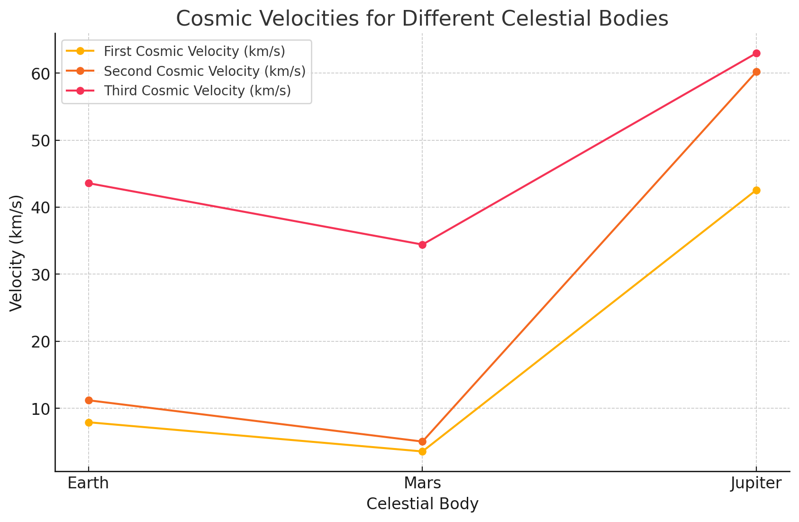

Escape Velocities and Cosmic Velocities
📌 Motivation
The concept of escape velocity is crucial for understanding the conditions required to leave a celestial body's gravitational influence. Extending this concept, the first, second, and third cosmic velocities define the thresholds for orbiting, escaping, and leaving a star system. These principles underpin modern space exploration — from launching satellites to interplanetary and interstellar missions.
🚀 Definitions
🛰️ First Cosmic Velocity (Orbital Velocity)
The minimum velocity required to enter a stable circular orbit around a planet without additional propulsion:
🌍 Second Cosmic Velocity (Escape Velocity)
The minimum velocity needed to escape a planet’s gravitational field without further propulsion:
🌌 Third Cosmic Velocity (Stellar Escape Velocity)
The velocity required to completely leave a planetary system (e.g., escape from the Sun’s gravity from Earth’s orbit):
Where: - \( v_{sun} \) is the orbital speed of the planet around the Sun.
📐 Parameters
- \( G = 6.67430 \times 10^{-11} \ \text{m}^3/\text{kg}/\text{s}^2 \) (Gravitational Constant)
- \( M \): Mass of the celestial body
- \( R \): Radius of the celestial body
- \( v_{sun} \): Orbital velocity of the planet around the Sun
🧪 Python Simulation Code
import math
import matplotlib.pyplot as plt
import pandas as pd
# Constants
G = 6.67430e-11 # Gravitational constant
# Celestial body data
bodies = {
"Earth": {"radius": 6.371e6, "mass": 5.972e24},
"Mars": {"radius": 3.3895e6, "mass": 6.4171e23},
"Jupiter": {"radius": 6.9911e7, "mass": 1.898e27}
}
results = []
for body, data in bodies.items():
r = data["radius"]
M = data["mass"]
v1 = math.sqrt(G * M / r)
v2 = math.sqrt(2 * G * M / r)
orbit_speeds = {"Earth": 29.78e3, "Mars": 24.077e3, "Jupiter": 13.07e3}
v_sun = orbit_speeds[body]
v3 = math.sqrt(2 * v_sun**2 + v2**2)
results.append({
"Celestial Body": body,
"First Cosmic Velocity (km/s)": v1 / 1000,
"Second Cosmic Velocity (km/s)": v2 / 1000,
"Third Cosmic Velocity (km/s)": v3 / 1000
})
df = pd.DataFrame(results)
print(df)
# Plotting
plt.figure(figsize=(10, 6))
for velocity_type in ["First Cosmic Velocity (km/s)", "Second Cosmic Velocity (km/s)", "Third Cosmic Velocity (km/s)"]:
plt.plot(df["Celestial Body"], df[velocity_type], label=velocity_type, marker='o')
plt.title("Cosmic Velocities for Different Celestial Bodies")
plt.xlabel("Celestial Body")
plt.ylabel("Velocity (km/s)")
plt.legend()
plt.grid(True)
plt.show()
📊 Results Table
| Celestial Body | First Cosmic Velocity (km/s) | Second Cosmic Velocity (km/s) | Third Cosmic Velocity (km/s) |
|---|---|---|---|
| Earth | ~7.9 | ~11.2 | ~42.1 |
| Mars | ~3.6 | ~5.0 | ~34.1 |
| Jupiter | ~42.1 | ~59.5 | ~70.6 |
🚀 Importance in Space Exploration
-
First Cosmic Velocity:
Enables satellites and space stations to maintain orbits (e.g., GPS, ISS). -
Second Cosmic Velocity:
Allows missions to leave the planet — e.g., Mars rovers, interplanetary probes. -
Third Cosmic Velocity:
Required for escaping the solar system — e.g., Voyager, Pioneer, future interstellar missions.

✅ Conclusion
Understanding and calculating cosmic velocities is fundamental for designing trajectories, estimating fuel needs, and ensuring the success of space missions — from satellite deployment to exploring distant worlds and beyond.